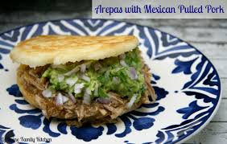
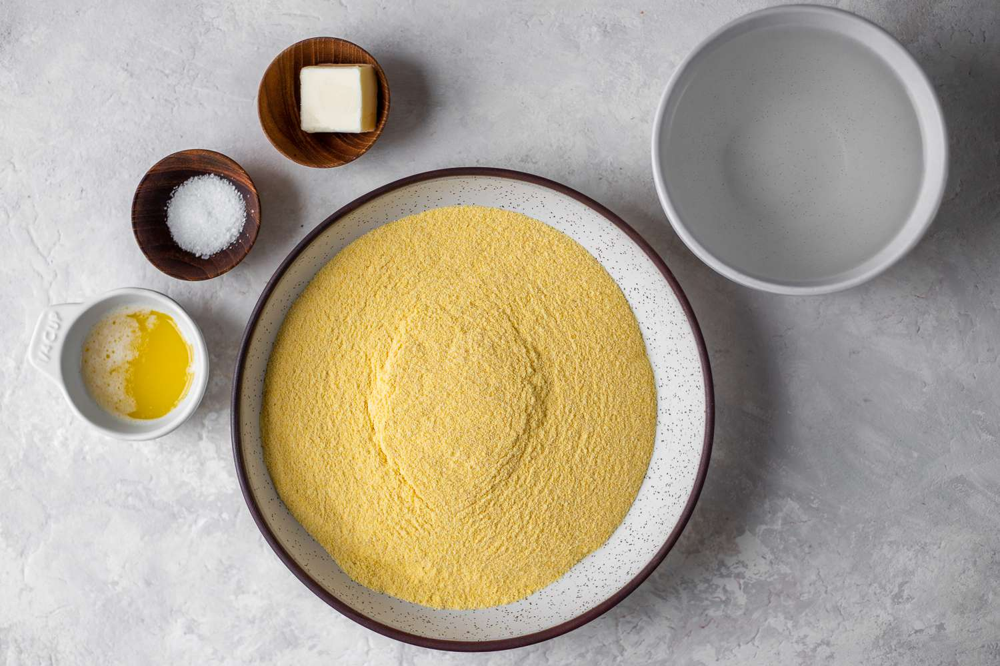
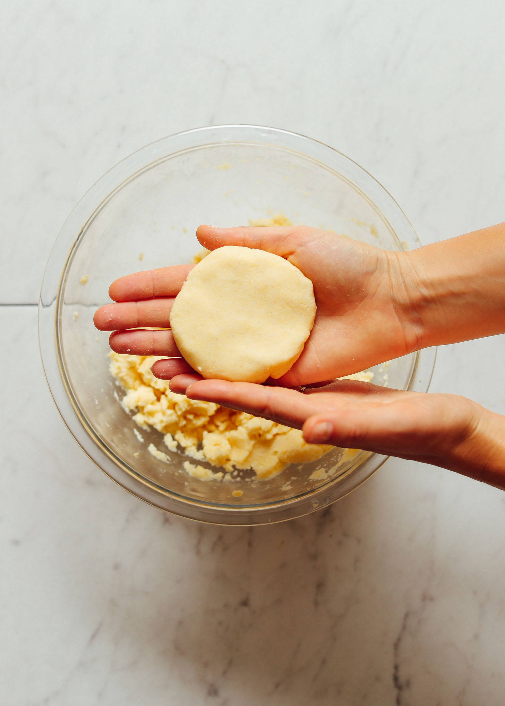

Arepas

This is a recpie that comes all the way from Venezuela, where my mom is from.
She would often make this for me and is good for breakfast, lunch, or dinner.
It's also great for when you have guests over.
The recipe shows how to make the base arepa. We encourage you to add your
own touches of flavor to it to make it unique. What goes inside the arepa
is completely up to you.
For breakfast I would reccomend something along the lines of bacon, sausage,
eggs and cheese.

For lunch you could prepare a pulled pork arepa.

There are also plent of ways to make vegetarian arepas.
Ingredients:
- 1 1/2 cups Masarepa: Masarepa is a special type of dehydrated cooked
corn meal that is available in the Latin section of grocery stores.
- 1/2 cups water
- 1 teaspoon vegetable oil
- salt
- 2 teaspoons of butter
- Fillings as desired: cheese (recommend Colombian queso), beans, shredded chicken,
beef, pulled pork, eggs, bacon, sausage, roasted peppers...be creative.
Directions
- Adjust rack to middle position and preheat oven to 325 degrees
-
Combine masarepa, cheese (if using), 1 cup water, a pinch of salt, and 1 teaspoon vegetable oil in medium bowl

and knead with hands until dough is formed.
Take a small amount and flatten it with your hands.

If it seems dry and
cracking, add splashes of water until dough becomes supple but not sticky.
- Take your dough and divide it up into 4 even pieces (or however many you want) and roll them into balls. Flatten them down to disks about 4 inches in diameter and about 1/2 inch thick.
- Melt butter in 12-inch cast iron or non-stick skillet over medium-low heat.
Lay down
your flattened arepas and cooking each side until they are golden brown with charred spots.
This should take about 5 minutes. Flip arepas, repeat.
- Transfer to a baking sheet and bake until cooked through for about 10 minutes.
- Remove from oven, let sit for 5 minutes
- Cut arepas in half long ways and fill with butter, cheese, meat, or whatever else you desire
- The most important step, enjoy!